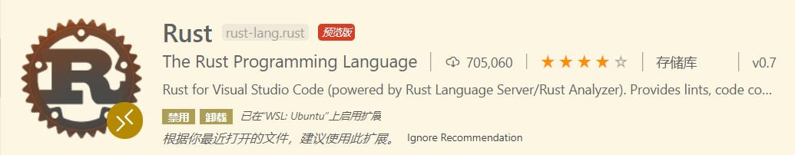
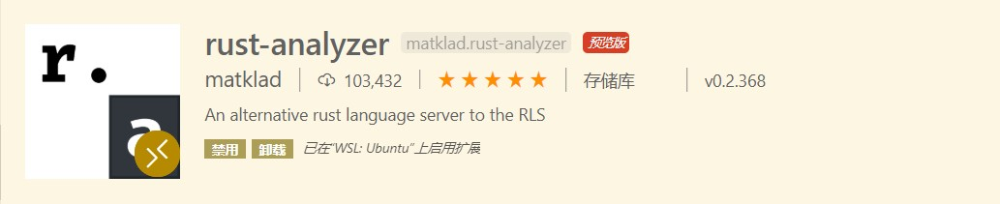
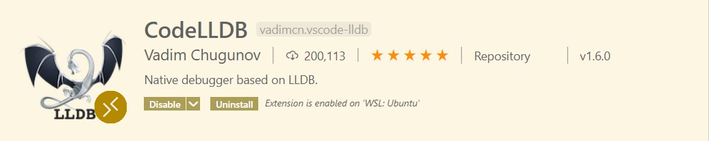
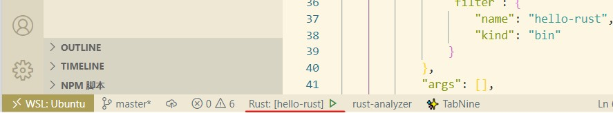

本文最后更新于：2022年9月1日 凌晨
为了让本地的环境更加干净便于管理，我正逐渐地把开发环境转移到wsl2中，win环境仅用来作游戏机和一些剪辑工作
下载安装
Rust官网中已经写得很详细了，这是我见过的编程语言中最漂亮的官网，而且官方文档也写得非常好，根据指引操作即可。
安装Rust主要有两种方式，第一种下载 Rustup
安装器并安装MSVC，第二种通过命令行下载。
这里我选择更方便的命令行方式以便安装在 wsl2 中：
1
2
3
4
5
6
7
8
9
|
export RUSTUP_DIST_SERVER=https://mirrors.ustc.edu.cn/rust-static
export RUSTUP_UPDATE_ROOT=https://mirrors.ustc.edu.cn/rust-static/rustup
export RUSTUP_IO_THREADS=1
curl --proto '=https' --tlsv1.2 -sSf https://sh.rustup.rs | sh
|
根据指引安装，我选择默认的1
在 Rust 开发环境中，所有工具都安装在 ~/.cargo/bin
目录中，您可以在这里找到包括 rustc、cargo 和
rustup 在内的 Rust 工具链。
更改镜像源
1
2
3
4
5
6
7
8
9
10
11
12
13
14
15
16
17
18
19
20
21
22
23
24
25
26
27
28
| [source.crates-io]
registry = "https://github.com/rust-lang/crates.io-index"
replace-with = 'rustcc'
[source.rustcc]
registry="git://crates.rustcc.com/crates.io-index"
[source.rustcc2]
registry="git://crates.rustcc.cn/crates.io-index"
[source.tuna]
registry = "https://mirrors.tuna.tsinghua.edu.cn/git/crates.io-index.git"
[source.ustc]
registry = "git://mirrors.ustc.edu.cn/crates.io-index"
[source.sjtu]
registry = "https://mirrors.sjtug.sjtu.edu.cn/git/crates.io-index"
[net]
git-fetch-with-cli = true
|
Hello World
Cargo
在安装 Rustup 时，会同时安装 Rust 构建工具和包管理器的最新稳定版，即
Cargo
检查是否安装了Rust和Cargo，可以在终端中运行：
创建一个Hello World
在命令行中运行：
当前目录下会生成一个 hello-rust 的新目录，其中：
1
2
3
4
| hello-rust
|- Cargo.toml
|- src
|- main.rs
|
配置VS Code
安装拓展
首先安装 Rust
拓展和 rust-analyzer
拓展

Rust

rust-analyzer
安装 Better
TOML 拓展以便支持 .toml 文件语法高亮
 Better TOML
Better TOML
为了能在 vs code 上调试 rust 代码，还需安装 CodeLLDB
拓展

CodeLLDB
运行hello-rust
在命令行中运行：
此时 vs code
右下角会出现相应提示，根据提示操作即可，如果没有提示可以尝试先打开src/main.rs
选择 运行 → 打开配置 此时应该会生成
launch.json 文件并打开
1
2
3
4
5
6
7
8
9
10
11
12
13
14
15
16
17
18
19
20
21
22
23
24
25
26
27
28
29
30
31
32
33
34
35
36
37
38
39
40
41
42
43
44
45
46
|
{
"version": "0.2.0",
"configurations": [
{
"type": "lldb",
"request": "launch",
"name": "Debug executable 'hello-rust'",
"cargo": {
"args": [
"build",
"--bin=hello-rust",
"--package=hello-rust"
],
"filter": {
"name": "hello-rust",
"kind": "bin"
}
},
"args": [],
"cwd": "${workspaceFolder}"
},
{
"type": "lldb",
"request": "launch",
"name": "Debug unit tests in executable 'hello-rust'",
"cargo": {
"args": [
"test",
"--no-run",
"--bin=hello-rust",
"--package=hello-rust"
],
"filter": {
"name": "hello-rust",
"kind": "bin"
}
},
"args": [],
"cwd": "${workspaceFolder}"
}
]
}
|
这时回到 main.rs
打断点，按F5启动调试，假如启动调试失败，观察左下方状态栏，是否未选择LLDB调试：

选择LLDB
卸载Rust
执行 rustup self uninstall